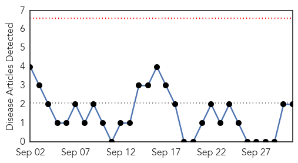
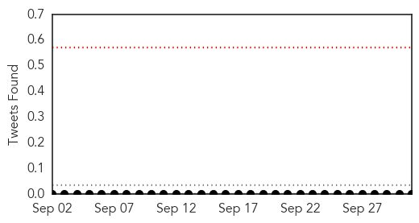
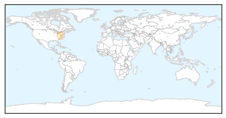

Pertussis
30-Day Web Trend
0 alerts, 0 warnings

30-Day Twitter Trend
0 alerts, 0 warnings

Article Locations
Article Confidences

Top Articles:
Top Tweets:
-
No tweets found for Oct 01, 2015
MERS
30-Day Web Trend
0 alerts, 0 warnings

30-Day Twitter Trend
0 alerts, 0 warnings

Article Locations

Article Confidences

Top Articles:
Top Tweets:
- 0.586
- AFD blog `Saudi MOH Reports 1 MERS Case' MERS-CoV http://t.co/7LX8LTOzLX
- 0.512
- AFD Blog `WHO MERS Update – Jordan, October 1st' MERS-CoV http://t.co/4EnJ6Husqw